Additional read-only coverage for the all-job-days goal: 48 discovered artwork files, 30 scoped/dependency scripts and 179 drawing-related functions. 36 new native-source opinions and12 earlier byte-identical source opinions are recorded, plus30 individual source cells. This is an unfinished whole-Day-One census. Discovered references and good source scores do not prove actual drawing or a played action.
Bathroom, pool, stuffie and art activities plus shared castle/contact/dust presentation are inventoried. Dynamic/class-only references, shared Main helpers, remaining atlas pose cells, all played stages and contact scoring remain open. Existing story clips and protected originals are preserved. Technical water inputs have explicitly technical opinions, not painted-prop acceptance.
D1A-0001
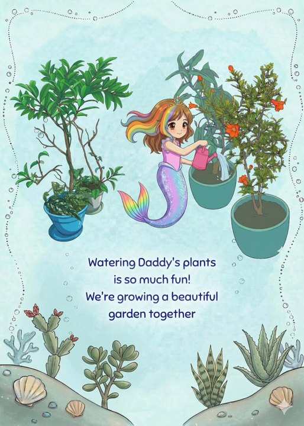
assets/book/hall/p_garden.jpg
Current source opinion: 4.6/5 · current Day One mounted/action pendingRoshan watering the plants retains the protected rainbow forelock, pink costume and lavender tail. The pink watering can separates from the foliage and the pale aqua page keeps a clear foreground group. Fine leaves and embedded prose belong to this preserved book scene; current hall mounting and phone readability remain unreviewed.
Next review: Reuse the protected source. If the live decoration competes with a task, adjust its non-destructive framing and display size after native review; do not redraw the scene.
1 source-reference sites; actual drawing/phase use pending.
D1A-0002
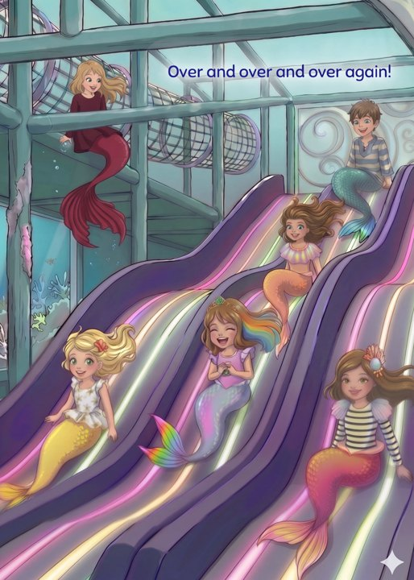
assets/book/hall/p_slide.jpg
Prior unchanged-source opinion: 4.6/5 · current Day One mounted/action pendingReuse attributed to the earlier sealed source opinion; no new mounted/action pass.
2 source-reference sites; actual drawing/phase use pending.
D1A-0003
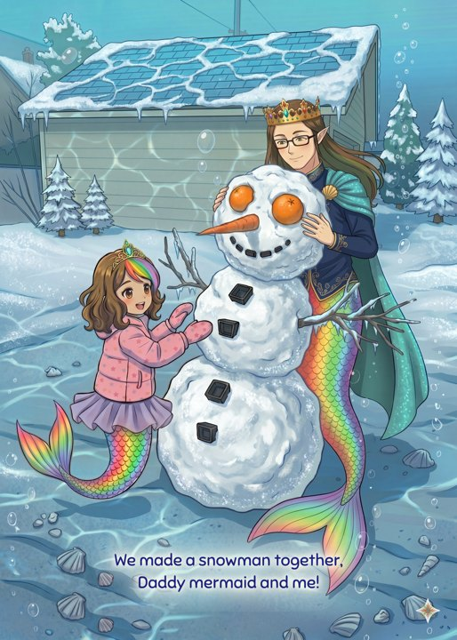
assets/book/hall/p_snowman.jpg
Current source opinion: 4.6/5 · current Day One mounted/action pendingThe snowman and two family figures form a clear triangular group. Warm carrot and rainbow tails separate from blue snow, with recognizable Roshan and Daddy. Detailed snow and embedded prose are appropriate to a preserved picture-book source but do not establish a non-reading live objective.
Next review: Preserve this identity source and review hall framing, task hierarchy and phone-size composition before any derivative.
1 source-reference sites; actual drawing/phase use pending.
D1A-0004
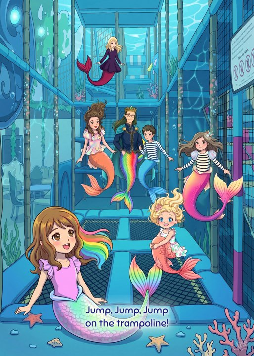
assets/book/hall/p_trampoline.jpg
Current source opinion: 4.6/5 · current Day One mounted/action pendingThe trampoline scene has coherent cool architecture and distinct warm mermaid silhouettes, led by the large foreground Roshan. Its several family figures and mesh lines are intentional story content. A small live wall copy may lose the background faces; source quality does not clear that mounting.
Next review: Reuse unchanged; test the actual wall size and crop or isolate non-destructively only if the played scene requires it.
1 source-reference sites; actual drawing/phase use pending.
D1A-0005
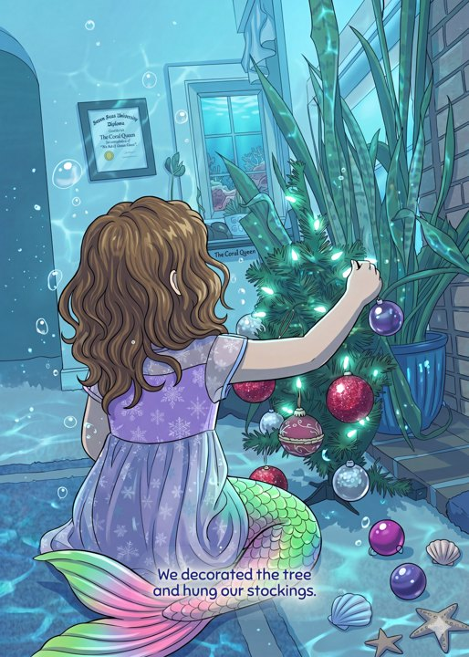
assets/book/hall/p_xmas.jpg
Current source opinion: 4.6/5 · current Day One mounted/action pendingThe rear view makes the hand-to-ornament action clear and keeps the rainbow tail visible. Warm baubles punctuate the cool tree and room. Hair, scales and tree lights contain fine detail, while the story text and signs need separate live-context treatment.
Next review: Preserve the original story moment. Review its intended decorative role, framing and phone readability rather than inventing replacement art.
1 source-reference sites; actual drawing/phase use pending.
D1A-0006
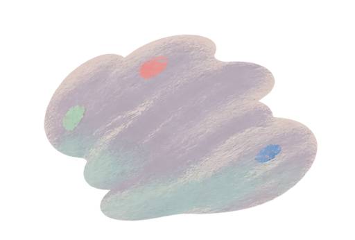
assets/castle/day_one_art_studio/grime_desk.png
Current source opinion: 4.0/5 · current Day One mounted/action pendingThe desk grime is a quiet lavender/aqua blob with three readable paint marks. Its alpha composite clears the apparent raw-preview white fringe. Dense dry-brush scratches make the mass look chalky and weaken the broad painted value bands required for the world.
Next review: First compare existing simpler dirt overlays at the actual desk. Reuse a fitting approved overlay, or generate only a calmer desk-shaped grime derivative with the same three color marks.
1 source-reference sites; actual drawing/phase use pending.
D1A-0007
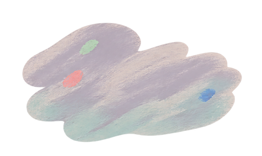
assets/castle/day_one_art_studio/grime_left.png
Current source opinion: 4.1/5 · current Day One mounted/action pendingThe left grime has a clear horizontal footprint and three broad color marks. Correct alpha compositing leaves a clean perimeter. Interior streaks are distributed across the full surface, so they read as scratch texture rather than two or three calm dirt clusters.
Next review: Preserve the left footprint; reduce detail through a separately saved approved reuse or targeted replacement after native placement review.
1 source-reference sites; actual drawing/phase use pending.
D1A-0008
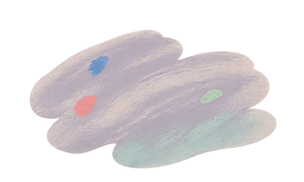
assets/castle/day_one_art_studio/grime_right.png
Current source opinion: 4.1/5 · current Day One mounted/action pendingThe right grime balances pink, blue and green marks within a lavender mass. Its real alpha edge is clean. Repeated pale diagonal streaks and little value separation make it less legible as dirt than as decorative chalk on a bright work surface.
Next review: Keep this position-specific shape and color identity; choose a simpler reusable dirt family before commissioning a replacement.
1 source-reference sites; actual drawing/phase use pending.
D1A-0009
assets/castle/day_one_art_studio/loose_brush_bundle.png
Current source opinion: 4.6/5 · current Day One mounted/action pendingThree rounded brushes keep distinct pink, aqua and lavender paint tips. Deep plum contours, broad handles and grouped gold/pearl accents give a readable toy-tool silhouette. The painted bristles remain subordinate to the major forms.
Next review: Reuse this bundle; if tools become separately interactive, preserve each exact brush and establish its own grip, tip and contact rather than rotating the whole bundle.
1 source-reference sites; actual drawing/phase use pending.
D1A-0010
assets/castle/day_one_art_studio/magic_cleaning_brush.png
Prior unchanged-source opinion: 4.7/5 · current Day One mounted/action pendingReuse attributed to the earlier sealed source opinion; no new mounted/action pass.
3 source-reference sites; actual drawing/phase use pending.
D1A-0011
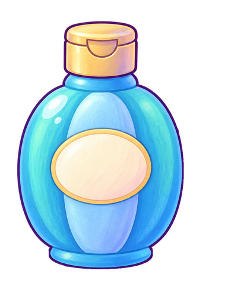
assets/castle/day_one_art_studio/paint_bottle_blue.png
Current source opinion: 4.6/5 · current Day One mounted/action pendingThe blue bottle has a simple oval body, blank label and broad aqua value bands. Its gold flip cap and plum outline remain readable without required text. Highlights are grouped and its alpha composite is clean.
Next review: Reuse unchanged; any opening or pouring state must preserve this bottle and its measured cap/spout rather than substituting another container.
1 source-reference sites; actual drawing/phase use pending.
D1A-0012
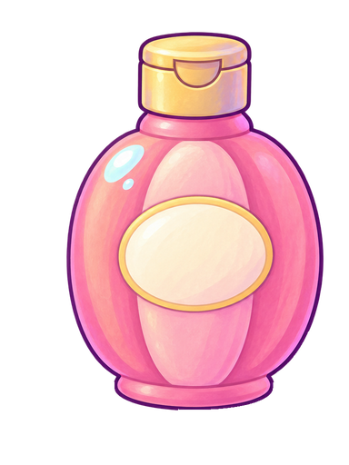
assets/castle/day_one_art_studio/paint_bottle_pink.png
Current source opinion: 4.6/5 · current Day One mounted/action pendingThe pink bottle keeps the same rounded body and gold cap as the blue sibling. A blank cream label and restrained highlights maintain color identity and phone-size readability. It fits the pastel painted prop family.
Next review: Reuse the source and retain its exact identity in any authored open/close/pour action.
1 source-reference sites; actual drawing/phase use pending.
D1A-0013
assets/castle/day_one_art_studio/paint_cups.png
Current source opinion: 4.6/5 · current Day One mounted/action pendingThe three cups use broad pink, aqua and violet surfaces, calm rims and clear front/back overlap. The central stick visibly enters the pink liquid. This grouped source is coherent; it does not establish a child-controlled stirring verb.
Next review: Reuse the group for its existing role; live stirring needs a measured stick grip, rim occlusion and liquid response without changing the cup designs.
1 source-reference sites; actual drawing/phase use pending.
D1A-0014
assets/castle/day_one_pool/activities/cleanup_basket.png
Current source opinion: 4.6/5 · current Day One mounted/action pendingThe shell basket has a generous open interior, clearly drawn front rim and two pearl handles. Its pink body, aqua braid and purple base match the room family. After correct alpha compositing there is no rectangular glow plate.
Next review: Reuse the source. Native scooping review must show objects enter behind the same front rim and remain conserved in the basket.
3 source-reference sites; actual drawing/phase use pending.
D1A-0015
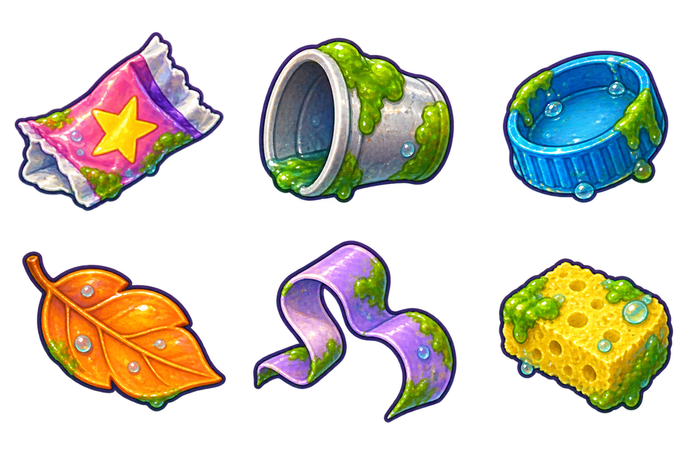
assets/castle/day_one_pool/activities/floating_trash_atlas.png
Current source opinion: 4.4/5 · current Day One mounted/action pendingAll six trash silhouettes are distinct, but foil, metal, slime and sponge surfaces carry many small specular and granular marks. The raw RGB glow lies under zero alpha and is not a rendered background defect. Individual cell opinions are recorded separately; the actual equal-sized source windows include two shifted origins.
Next review: Keep the six identities and working source windows. Check their native target sizes, then simplify only the individual weak material treatments using approved reuse or separate derivatives.
1 source-reference sites; actual drawing/phase use pending.
D1A-0016

assets/castle/day_one_pool/activities/pool_skimmer.png
Current source opinion: 4.5/5 · current Day One mounted/action pendingThe skimmer has a coherent diagonal grip, shaft, hoop and hanging mesh. Its plum outline is clean in the alpha composite. Dense pearl highlights, shaft reflections and the fine white mesh compete with the useful net opening at small sizes.
Next review: Preserve the measured handle/net anchors. Native size review should determine whether a simpler existing tool or a restrained same-design derivative is required.
1 source-reference sites; actual drawing/phase use pending.
D1A-0017
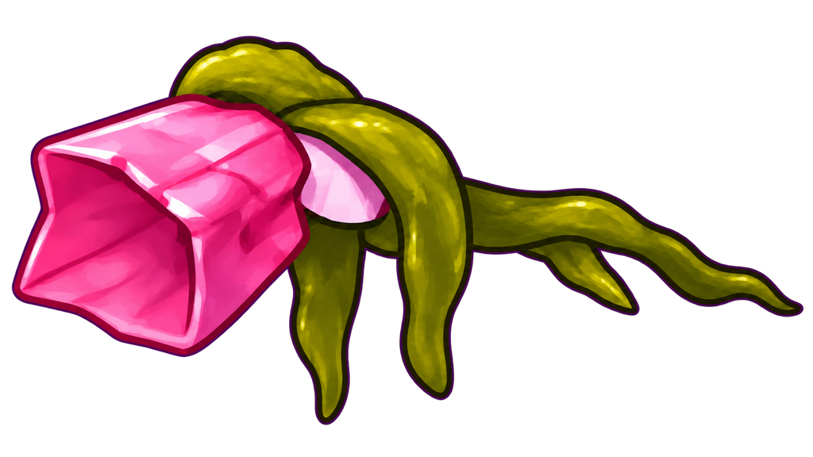
assets/castle/day_one_pool/activities/seahorse_mouth_trash.png
Current source opinion: 4.3/5 · current Day One mounted/action pendingThe pink mouth obstruction separates strongly from the olive seaweed, with a clear removable bundle silhouette. Crumpled glossy facets and dense seaweed brush texture give it a harder material treatment than surrounding broad painted forms.
Next review: Preserve the exact obstruction and attachment location. Simplify the bundle at the source or reuse fitting existing trash after reviewing extraction/contact continuity.
1 source-reference sites; actual drawing/phase use pending.
D1A-0018
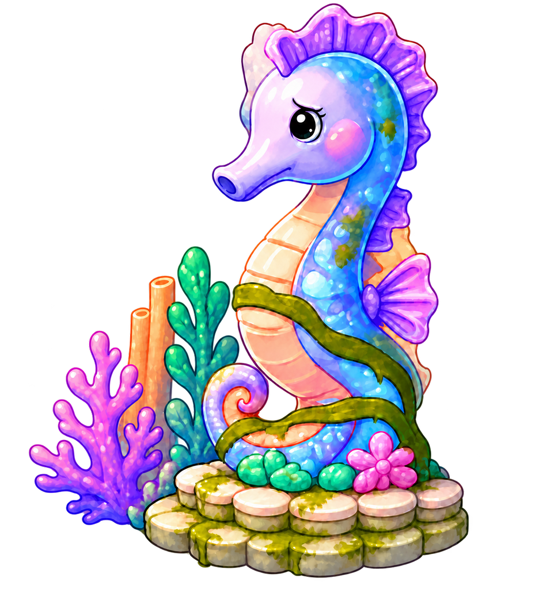
assets/castle/day_one_pool/activities/seahorse_sick_clear_mouth.png
Current source opinion: 4.4/5 · current Day One mounted/action pendingThe seahorse keeps a large expressive eye, curled tail and distinct lavender/aqua identity. Coral, rocks, algae ribbons and shiny surface speckles create several competing detail clusters within one card. The mouth is clean in this source; removing a separately owned obstruction must not replace the entire statue with a different identity.
Next review: Inventory its clean/sick counterparts and reuse the same statue geometry. Refine only the weak detail or state continuity identified in actual rescue play.
1 source-reference sites; actual drawing/phase use pending.
D1A-0019
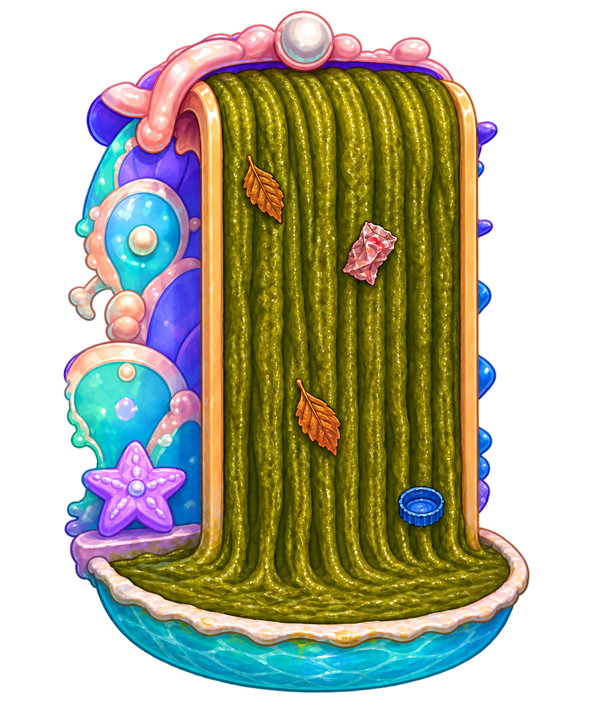
assets/castle/day_one_pool/activities/waterfall_clogged_original_match.png
Current source opinion: 4.2/5 · current Day One mounted/action pendingThe clogged waterfall retains the shell frame and basin identity, but many bright olive strands cover almost the full water sheet. Repeated tiny wet highlights compete with four much smaller removable trash marks. At reduced size the clog reads as a textured curtain rather than one clear obstruction.
Next review: Preserve the fixture and clean-state geometry. Review the live clearing sequence and author simpler coherent clog/removal states using the same waterfall, with truthful water restoration.
1 source-reference sites; actual drawing/phase use pending.
D1A-0020
assets/castle/day_one_pool/activities/waterfall_scrubber.png
Current source opinion: 4.5/5 · current Day One mounted/action pendingThe scrubber has an immediately readable straight working edge and long diagonal handle. Purple/aqua blocks fit the palette. Pearl details, glittery shell fill and shaft reflections make the tool busier than its useful blade.
Next review: Retain its actual grip/blade coordinates. Reuse if native scale clears the detail; otherwise save a restrained same-design derivative rather than changing the tool silhouette.
1 source-reference sites; actual drawing/phase use pending.
D1A-0021
assets/castle/dirty_cleanup_2d/critters/dust_bunnies/dust_bunny_curl_ears.png
Current source opinion: 4.6/5 · current Day One mounted/action pendingThe curled-ear dust bunny groups its lavender body into a few rounded masses and large spirals. Plum contours, two bright eyes and peach paws keep a friendly non-threatening identity. Highlights remain subordinate to the face.
Next review: Reuse unchanged; any curl/uncurl action should preserve the same ears, face and paw ownership.
2 source-reference sites; actual drawing/phase use pending.
D1A-0022
assets/castle/dirty_cleanup_2d/critters/dust_bunnies/dust_bunny_shell_hide.png
Prior unchanged-source opinion: 4.6/5 · current Day One mounted/action pendingReuse attributed to the earlier sealed source opinion; no new mounted/action pass.
1 source-reference sites; actual drawing/phase use pending.
D1A-0023
assets/castle/dirty_cleanup_2d/critters/dust_bunnies/dust_bunny_swimming.png
Current source opinion: 4.6/5 · current Day One mounted/action pendingThe swimming dust bunny keeps the same lavender spirals, peach paws and large eyes in a clear diagonal motion pose. Correct alpha compositing clears the apparent top clipping seen in raw RGB; painted alpha bounds are [91,7,963,675]. This is one pose, not evidence of a coherent swim loop.
Next review: Reuse this complete pose. Review neighboring held states, pivots and actual motion before generating any missing action state.
1 source-reference sites; actual drawing/phase use pending.
D1A-0024
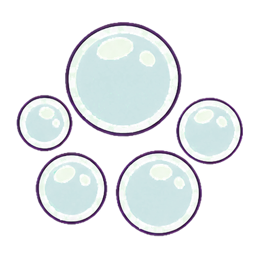
assets/castle/dirty_cleanup_2d/effects/fx_soap_bubbles.png
Current source opinion: 4.0/5 · current Day One mounted/action pendingFive aqua soap bubbles have strong plum rings and simple silhouettes. Their white rim and glint shapes are visibly fragmented and speckled even after alpha compositing, producing rough highlight edges rather than calm painted patches.
Next review: Inventory the already approved bubble family and replace this named weak effect through non-destructive reuse if it fits the current role; retain the original and review density/overdraw in play.
2 source-reference sites; actual drawing/phase use pending.
D1A-0025
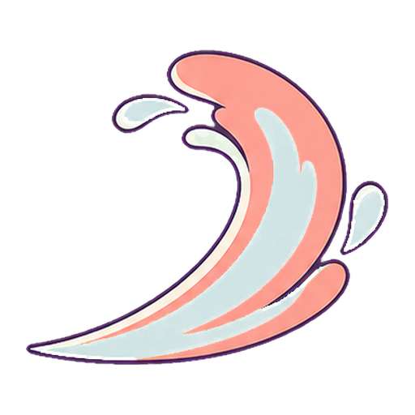
assets/castle/dirty_cleanup_2d/effects/fx_wipe_swoosh.png
Current source opinion: 4.5/5 · current Day One mounted/action pendingThe peach/aqua wipe arc and three droplets make the direction clear. Its broad bands fit the palette. Thin pale edge strips and small broken highlights are less clean than the major contour, and a whole effect arc cannot substitute for actual hand/tool contact.
Next review: Reuse or derive a cleaner existing wipe effect if native rendering confirms the weakness; audit the cleaning verb separately.
1 source-reference sites; actual drawing/phase use pending.
D1A-0026
assets/castle/dirty_cleanup_2d/targets/target_bath_soap_ring.png
Current source opinion: 4.5/5 · current Day One mounted/action pendingThe soap ring has a clear open center and soft lavender/aqua bubble masses. Numerous tiny white glints and repeated individual bubbles make the ring decorative and busy. Its usefulness depends on lying against the actual bath surface without covering the active target.
Next review: Review its mounted bath geometry and alpha density. Reuse a calmer existing foam family if needed while preserving the ring footprint.
1 source-reference sites; actual drawing/phase use pending.
D1A-0027
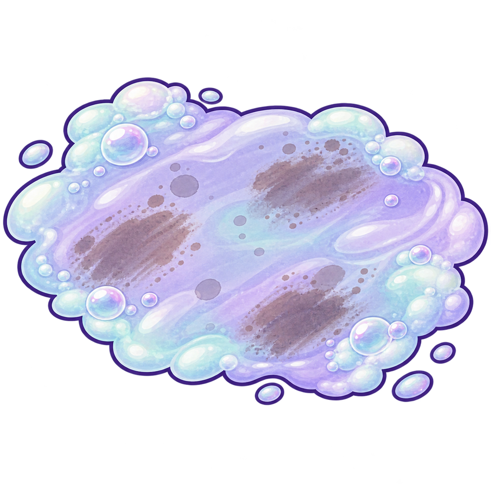
assets/castle/dirty_cleanup_2d/targets/target_sink_grime_v1.png
Current source opinion: 4.3/5 · current Day One mounted/action pendingThe sink grime keeps three main dirt patches within a lavender foam oval, with a clear outlined silhouette. Fine brown flecks and many shiny bubbles distribute texture over the entire mass; the grime can appear as a floating decorative badge rather than adhered dirt.
Next review: Review its live sink fit, rim occlusion and cleaning response. Preserve the sink identity and create a calmer localized dirt derivative only if reuse cannot meet the fit.
2 source-reference sites; actual drawing/phase use pending.
D1A-0028
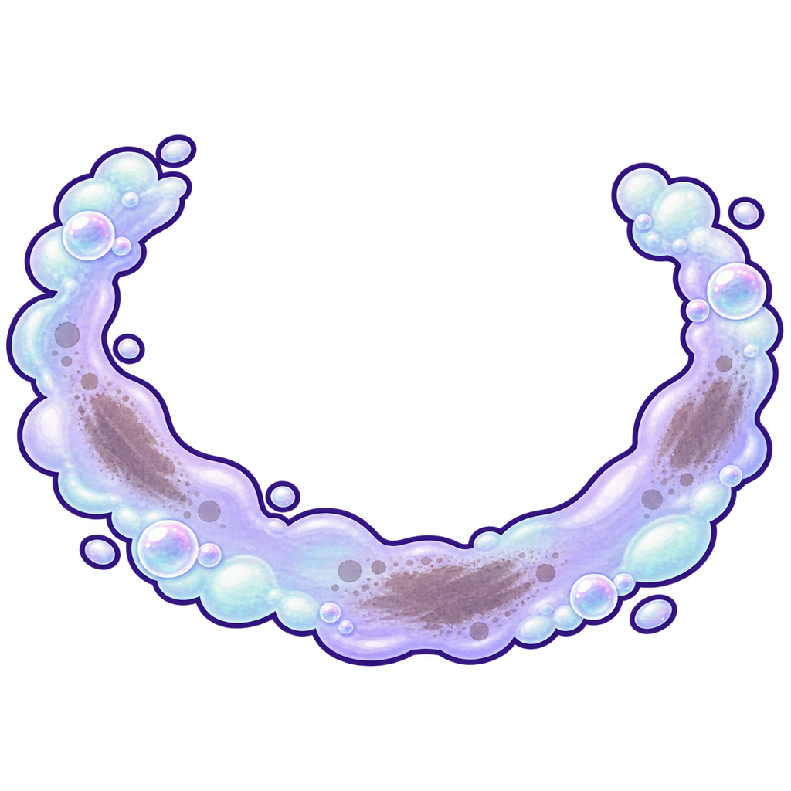
assets/castle/dirty_cleanup_2d/targets/target_tub_grime_v1.png
Current source opinion: 4.3/5 · current Day One mounted/action pendingThe tub grime uses a U-shaped band that can leave the basin center readable. Broad dirt zones are present, but dense flecks, pearl-like bubbles and a heavy continuous outline compete with the tub material and imply a separate pasted-on object.
Next review: Keep the U-shaped contact footprint. Test the actual tub curve and layer ownership, then reuse or regenerate only the weak adhered-dirt treatment.
1 source-reference sites; actual drawing/phase use pending.
D1A-0029
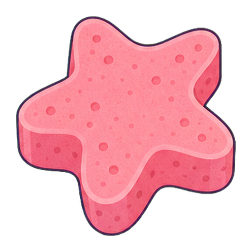
assets/castle/dirty_cleanup_2d/tools/tool_star_sponge.png
Current source opinion: 4.6/5 · current Day One mounted/action pendingThe pink star sponge has one rounded silhouette, a readable side thickness and three broad value zones. Larger pores describe the material while a few small marks remain subordinate. The plum edge stays clear against a pale room.
Next review: Reuse unchanged and measure the contact face/grip for the actual scrub action.
2 source-reference sites; actual drawing/phase use pending.
D1A-0030
assets/castle/training/ghost_hand.png
Prior unchanged-source opinion: 4.6/5 · current Day One mounted/action pendingReuse attributed to the earlier sealed source opinion; no new mounted/action pass.
5 source-reference sites; actual drawing/phase use pending.
D1A-0031
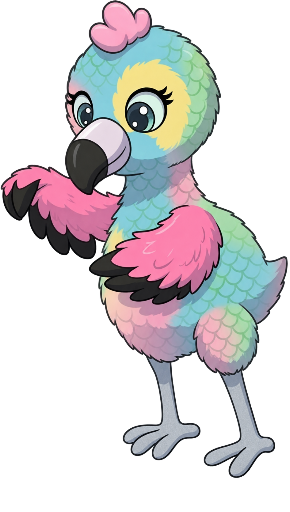
assets/characters/companions/baby_eagle.png
Prior unchanged-source opinion: 4.6/5 · current Day One mounted/action pendingReuse attributed to the earlier sealed source opinion; no new mounted/action pass.
2 source-reference sites; actual drawing/phase use pending.
D1A-0032
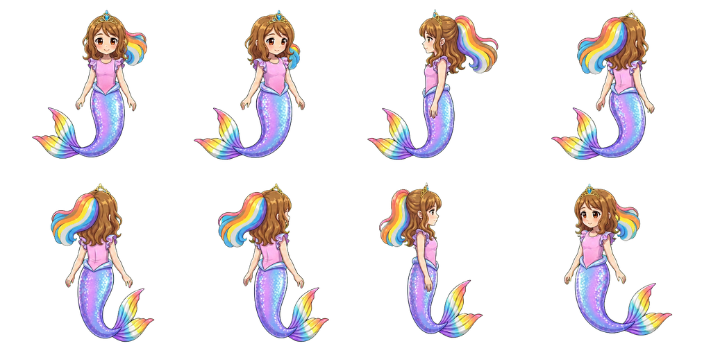
assets/characters/roshan_25d/roshan_directional.png
Prior unchanged-source opinion: 4.6/5 · current Day One mounted/action pendingReuse attributed to the earlier sealed source opinion; no new mounted/action pass.
4 source-reference sites; actual drawing/phase use pending.
D1A-0033
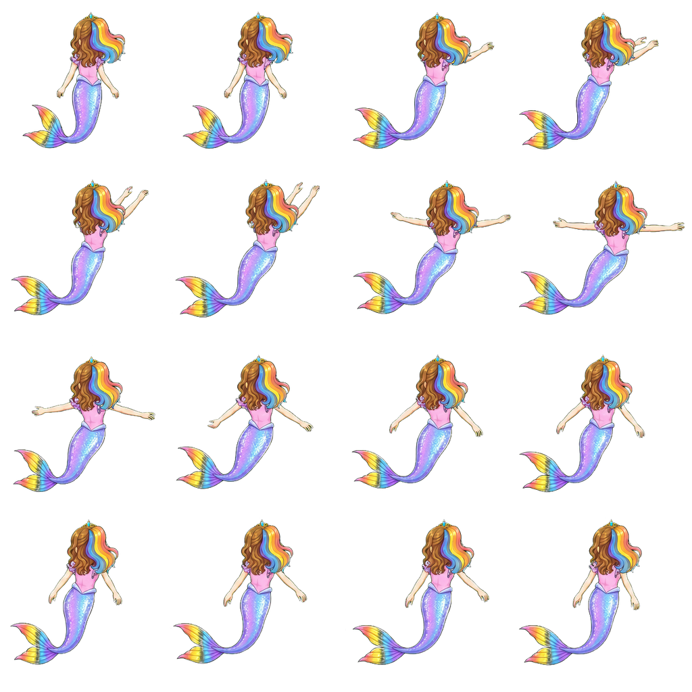
assets/characters/roshan_25d/roshan_swim_back.png
Current source opinion: 4.5/5 · current Day One mounted/action pendingAll16 rear-swim Roshan cells preserve the rainbow hair, pink top and lavender/rainbow tail. The thin fingers and small scale highlights need phone review. Several cells have only one painted pixel of side margin; none has painted alpha on the actual 256px cell edge. Individual cell opinions are separate from temporal continuity.
Next review: Reuse the approved identity family. Review pivots, neighbor scale and native motion; fix a measured cell/mounting defect individually without redesigning Roshan.
1 source-reference sites; actual drawing/phase use pending.
D1A-0034
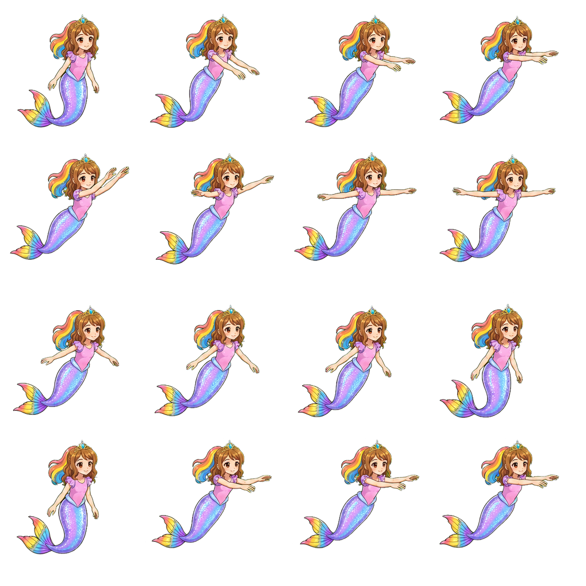
assets/characters/roshan_25d/roshan_swim_front.png
Prior unchanged-source opinion: 4.4/5 · current Day One mounted/action pendingReuse attributed to the earlier sealed source opinion; no new mounted/action pass.
1 source-reference sites; actual drawing/phase use pending.
D1A-0035
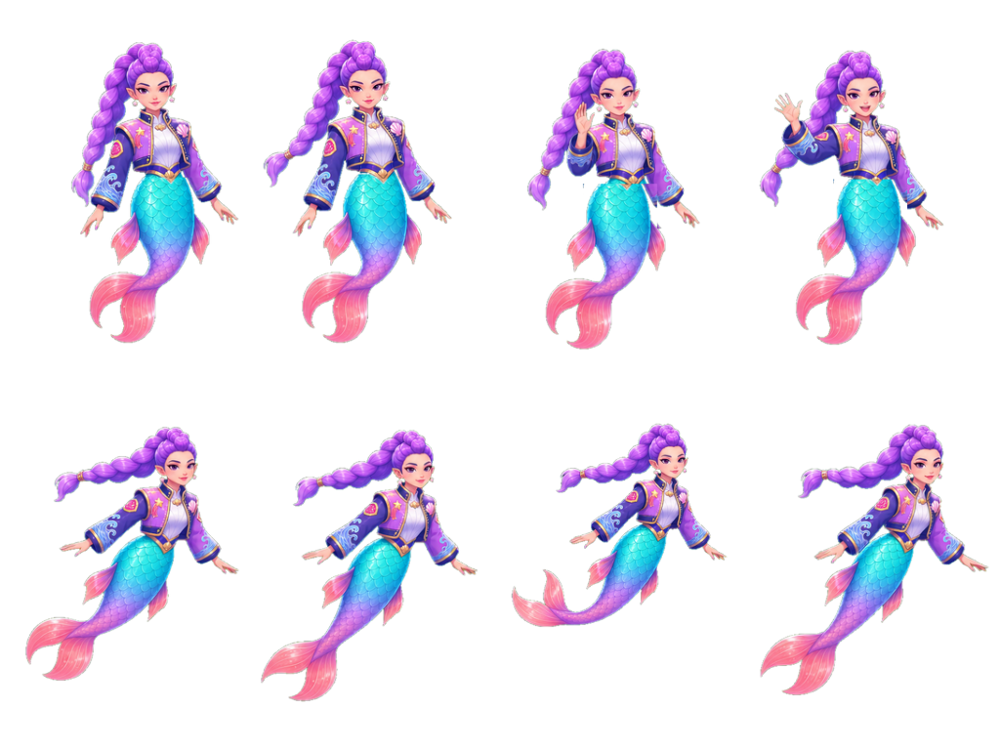
assets/characters/rumi/rumi_eight_pose_runtime.png
Prior unchanged-source opinion: 4.5/5 · current Day One mounted/action pendingReuse attributed to the earlier sealed source opinion; no new mounted/action pass.
1 source-reference sites; actual drawing/phase use pending.
D1A-0036
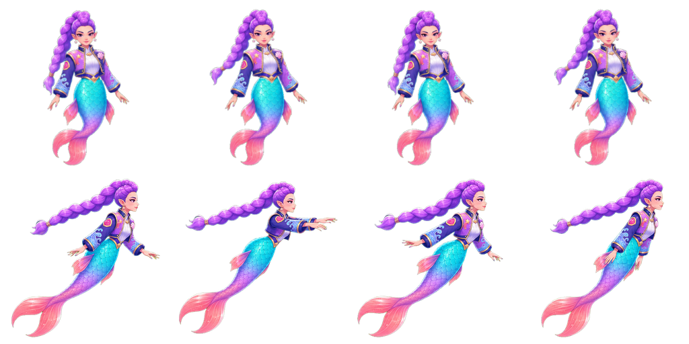
assets/characters/rumi/rumi_pool_idle_swim_atlas.png
Current source opinion: 4.5/5 · current Day One mounted/action pendingThe eight Rumi cells keep the long purple braid, patterned purple costume and aqua/pink tail. Correct alpha and cell measurements clear suspected clipping; every painted cell has interior margins. Fine costume motifs and finger/face details need phone review, and still cells do not prove a coherent idle-to-swim sequence.
Next review: Reuse the identity. Audit each current cell and its actual timing/neighbor placement before any targeted continuity derivative.
1 source-reference sites; actual drawing/phase use pending.
D1A-0037
assets/effects/grand_puff/purple_vortex_v4.png
Current source opinion: 4.6/5 · current Day One mounted/action pendingThe purple vortex forms one broad readable spiral with rounded cloud masses, grouped lavender highlights and a clear outline. This source fits the painted effect family. Its presence in a source reference does not establish the permitted timing, current tell grammar or actor visibility.
Next review: Reuse only within its current authorized effect role; inspect actual aiming/launch ownership and the owner-directed boss choreography before choosing any replacement.
1 source-reference sites; actual drawing/phase use pending.
D1A-0038
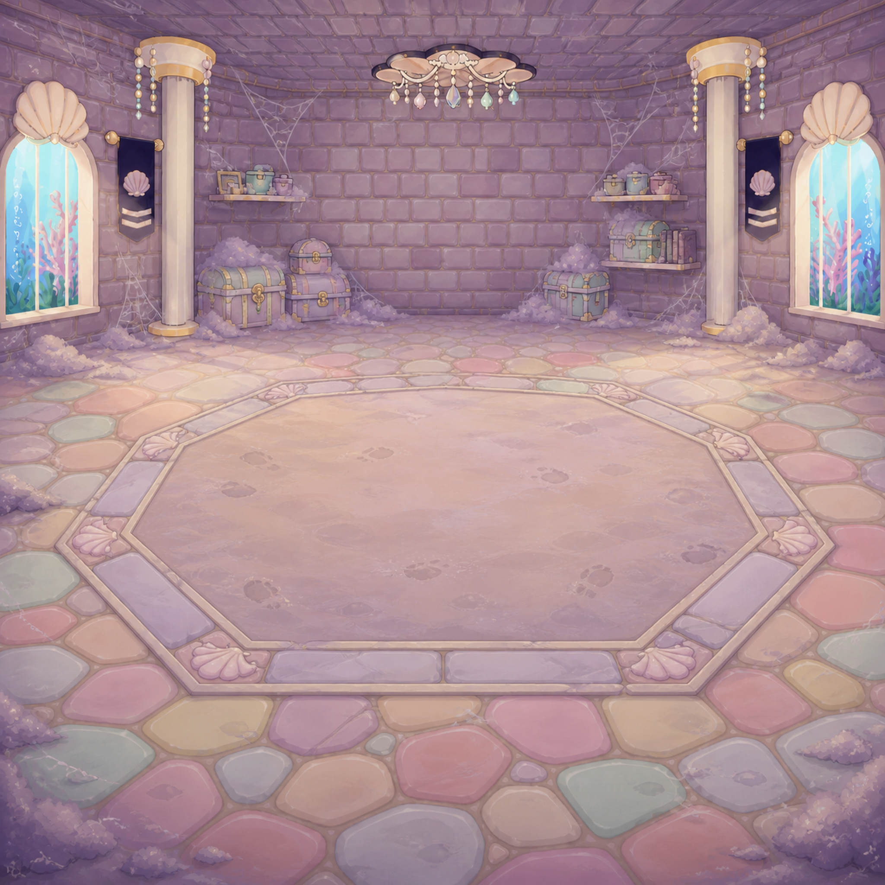
assets/flats/castle/boss/dusty_attic_arena_2048.png
Current source opinion: 4.6/5 · current Day One mounted/action pendingThe attic plate keeps a quiet central arena, pastel stone bands and peripheral dusty chests. Cool windows and restrained warm columns frame the play area without occupying its center. Native2048 coverage is recorded; mounted HUD, foreground occlusion and actor separation still need review.
Next review: Reuse unchanged; review the true composite and its actual background slicing/scaling rather than restyling the room.
1 source-reference sites; actual drawing/phase use pending.
D1A-0039
assets/flats/castle/rooms/room_actor_shadow.png
Prior unchanged-source opinion: 4.5/5 · current Day One mounted/action pendingReuse attributed to the earlier sealed source opinion; no new mounted/action pass.
3 source-reference sites; actual drawing/phase use pending.
D1A-0040
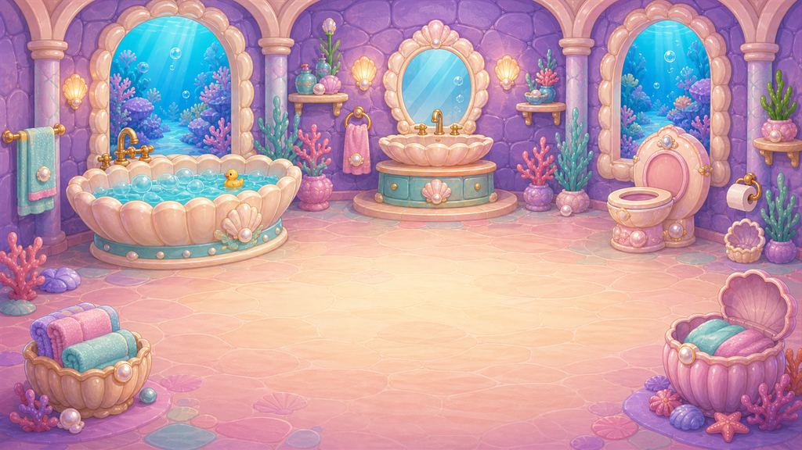
assets/flats/castle/rooms/room_bubble_bath.png
Current source opinion: 4.6/5 · current Day One mounted/action pendingThe clean bathroom has readable shell fixtures, cool windows, warm lighting and a broad quiet center floor. Pastel material bands are coherent. Peripheral baskets and coral are detailed, making actor/target separation a live-context question rather than a source defect.
Next review: Reuse the established room design and test native HUD/task hierarchy and fixture contact.
1 source-reference sites; actual drawing/phase use pending.
D1A-0041
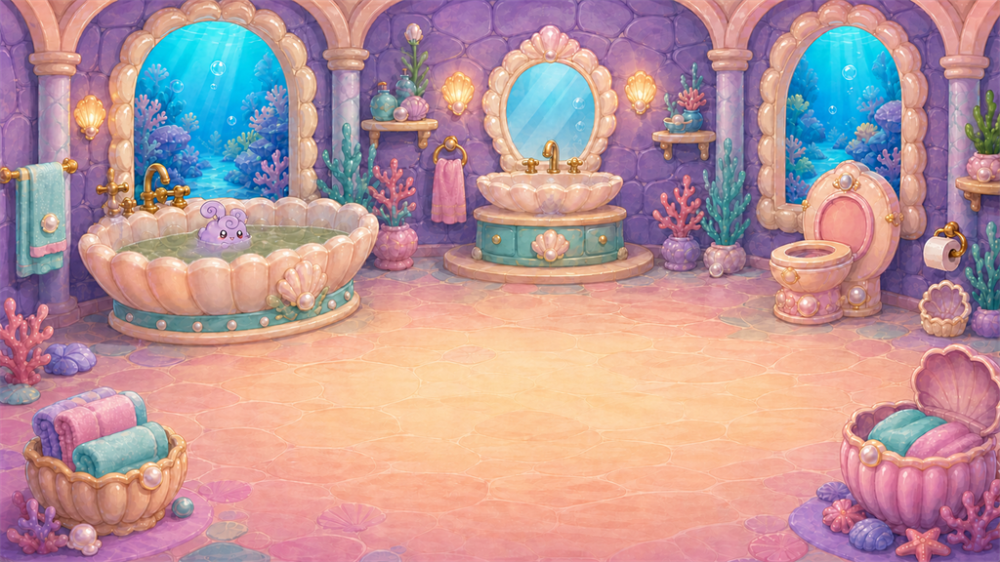
assets/flats/castle/rooms/room_bubble_bath_dirty_day_one.png
Current source opinion: 4.3/5 · current Day One mounted/action pendingThe dirty bathroom preserves the principal fixture layout and gives recognizable towels, footprints and murky water. Fine scratch texture is spread across walls, fixtures and floor, reducing the separation between intentional dirt targets and decorative detail. The cleaner counterpart is calmer.
Next review: Keep the same room and story state. Review the exact dirty-to-clean transition and localize grime to child-readable targets; reuse existing plates/overlays before generating a targeted derivative.
1 source-reference sites; actual drawing/phase use pending.
D1A-0042
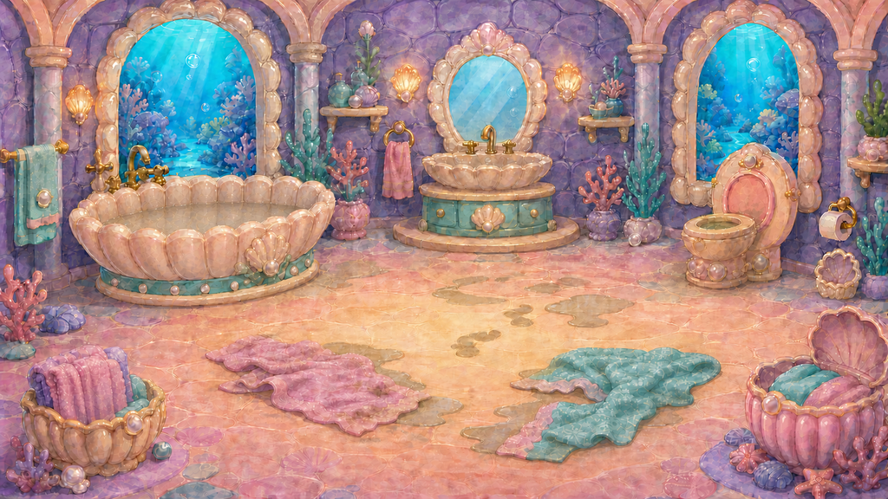
assets/flats/castle/rooms/room_bubble_bath_dirty_drained_day_one.png
Current source opinion: 4.3/5 · current Day One mounted/action pendingThe drained dirty plate preserves the dirty-room staging and removes bath water, exposing the basin interior. The same dense all-surface texture weakens target hierarchy. Still-image comparison alone does not establish a correct drain contact/timeline or seamless handoff.
Next review: Preserve the room and drained state, audit the live transition against its source endpoint, and repair only proven dirt/readability or fixture-continuity gaps.
1 source-reference sites; actual drawing/phase use pending.
D1A-0043
assets/mg/star.png
Prior unchanged-source opinion: 4.6/5 · current Day One mounted/action pendingReuse attributed to the earlier sealed source opinion; no new mounted/action pass.
2 source-reference sites; actual drawing/phase use pending.
D1A-0044

assets/opera/worlds/props/fx_dust_puff.png
Prior unchanged-source opinion: 4.6/5 · current Day One mounted/action pendingReuse attributed to the earlier sealed source opinion; no new mounted/action pass.
2 source-reference sites; actual drawing/phase use pending.
D1A-0045
assets/opera/worlds/props/fx_stolen_sparkle.png
Prior unchanged-source opinion: 4.6/5 · current Day One mounted/action pendingReuse attributed to the earlier sealed source opinion; no new mounted/action pass.
3 source-reference sites; actual drawing/phase use pending.
D1A-0046
assets/sprites/sky_lagoon/sky_lagoon_smoke_wisp_v2.png
Current source opinion: 4.6/5 · current Day One mounted/action pendingThe narrow lavender wisp uses a clean curved silhouette and two broad value bands. Its sparse marks fit a supporting mist role. Its46px source width means large magnification and alpha density must be checked in the Royal Hall; an isolated source is not an accepted room effect.
Next review: Reuse at its current suitable size and review actual mist density/actor visibility before changing it.
1 source-reference sites; actual drawing/phase use pending.
D1A-0047
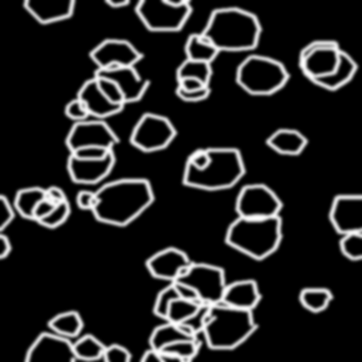
assets/terrain/caustics.png
Current source opinion: 4.0/5 · current Day One mounted/action pendingThe caustic input is a monochrome field of irregular closed polygon rings, with several dense overlaps and soft edges. It is sampled by the unshaded Canvas fixture-water shader, not displayed as this literal black square. Its raw pattern suggests a repetitive ring texture, but mounted water quality cannot be inferred from the input alone.
Next review: Audit the actual water composite/timing first. Prefer existing suitable technical inputs or a small deterministic shader/input repair if the live pattern fails; no speculative generated water plate.
1 source-reference sites; actual drawing/phase use pending.
D1A-0048

assets/terrain/up_water_nrm.jpg
Current source opinion: 3.0/5 · current Day One mounted/action pendingTechnical-input opinion: all4096 pixels are the identical RGB(128,127,254). The current Canvas fixture-water shader samples its green/blue channels at moving UVs, so this input supplies no spatial ripple variation. This is not a painted prop style score, and the separately sampled caustics may still animate the final surface.
Next review: Capture the live water before selecting a repair. Inventory existing suitable technical ripple inputs; use a separately saved lightweight technical input or Canvas shader repair if the intended water motion needs it.
1 source-reference sites; actual drawing/phase use pending.
These exact source windows show artwork only. No interpolation or temporal acceptance is inferred.
Star wrapper
Source-cell opinion: 4.4/5Clear pink/star identity; tiny foil/slime highlights dominate the broad wrapper folds.
Source window [12, 0, 341, 341]; actual timing, contact and mounted review pending.
Metal can
Source-cell opinion: 4.3/5Readable open rim and metal cylinder; granular grey metal and many slime glints are busier than painted value bands.
Source window [352, 0, 341, 341]; actual timing, contact and mounted review pending.
Blue bottle cap
Source-cell opinion: 4.5/5Distinct blue cup/rim silhouette; closely spaced ridges and bright beads need native-size review.
Source window [682, 0, 341, 341]; actual timing, contact and mounted review pending.
Orange leaf
Source-cell opinion: 4.6/5Broad warm leaf mass and a few clear veins make the simplest cell; reuse it.
Source window [0, 341, 341, 341]; actual timing, contact and mounted review pending.
Purple ribbon
Source-cell opinion: 4.4/5A recognizable curved strip, with dense speckle and small slime highlights distracting from its twist.
Source window [341, 341, 341, 341]; actual timing, contact and mounted review pending.
Yellow sponge
Source-cell opinion: 4.3/5Clear block silhouette, but many small dark pores and specular slime marks create noisy material detail.
Source window [682, 341, 341, 341]; actual timing, contact and mounted review pending.
Roshan rear swim cell00
Source-cell opinion: 4.6/5Arms down; approved identity colors and complete painted silhouette are retained. Painted alpha bbox[34, 20, 185, 219]; minimum cell margin20px. Detail and pivot/neighbor timing still need native phone-size motion review.
Source window [0, 0, 256, 256]; actual timing, contact and mounted review pending.
Roshan rear swim cell01
Source-cell opinion: 4.6/5Arms down; approved identity colors and complete painted silhouette are retained. Painted alpha bbox[15, 19, 177, 220]; minimum cell margin15px. Detail and pivot/neighbor timing still need native phone-size motion review.
Source window [256, 0, 256, 256]; actual timing, contact and mounted review pending.
Roshan rear swim cell02
Source-cell opinion: 4.6/5Forward reach; approved identity colors and complete painted silhouette are retained. Painted alpha bbox[11, 20, 219, 220]; minimum cell margin11px. Detail and pivot/neighbor timing still need native phone-size motion review.
Source window [512, 0, 256, 256]; actual timing, contact and mounted review pending.
Roshan rear swim cell03
Source-cell opinion: 4.4/5Forward reach; approved identity colors and complete painted silhouette are retained. Painted alpha bbox[1, 20, 206, 221]; minimum cell margin1px. Tight padding needs native neighbor/filter review; no current painted-edge clipping is claimed.
Source window [768, 0, 256, 256]; actual timing, contact and mounted review pending.
Roshan rear swim cell04
Source-cell opinion: 4.6/5Raised reach; approved identity colors and complete painted silhouette are retained. Painted alpha bbox[17, 12, 219, 210]; minimum cell margin12px. Detail and pivot/neighbor timing still need native phone-size motion review.
Source window [0, 256, 256, 256]; actual timing, contact and mounted review pending.
Roshan rear swim cell05
Source-cell opinion: 4.4/5Raised reach; approved identity colors and complete painted silhouette are retained. Painted alpha bbox[4, 12, 217, 213]; minimum cell margin4px. Tight padding needs native neighbor/filter review; no current painted-edge clipping is claimed.
Source window [256, 256, 256, 256]; actual timing, contact and mounted review pending.
Roshan rear swim cell06
Source-cell opinion: 4.6/5Arms spread; approved identity colors and complete painted silhouette are retained. Painted alpha bbox[12, 13, 243, 208]; minimum cell margin12px. Detail and pivot/neighbor timing still need native phone-size motion review.
Source window [512, 256, 256, 256]; actual timing, contact and mounted review pending.
Roshan rear swim cell07
Source-cell opinion: 4.4/5Arms spread; approved identity colors and complete painted silhouette are retained. Painted alpha bbox[1, 13, 245, 209]; minimum cell margin1px. Tight padding needs native neighbor/filter review; no current painted-edge clipping is claimed.
Source window [768, 256, 256, 256]; actual timing, contact and mounted review pending.
Roshan rear swim cell08
Source-cell opinion: 4.6/5Arms spread; approved identity colors and complete painted silhouette are retained. Painted alpha bbox[20, 17, 229, 216]; minimum cell margin17px. Detail and pivot/neighbor timing still need native phone-size motion review.
Source window [0, 512, 256, 256]; actual timing, contact and mounted review pending.
Roshan rear swim cell09
Source-cell opinion: 4.6/5Arms lowering; approved identity colors and complete painted silhouette are retained. Painted alpha bbox[5, 15, 206, 211]; minimum cell margin5px. Detail and pivot/neighbor timing still need native phone-size motion review.
Source window [256, 512, 256, 256]; actual timing, contact and mounted review pending.
Roshan rear swim cell10
Source-cell opinion: 4.6/5Arms lowering; approved identity colors and complete painted silhouette are retained. Painted alpha bbox[9, 14, 202, 211]; minimum cell margin9px. Detail and pivot/neighbor timing still need native phone-size motion review.
Source window [512, 512, 256, 256]; actual timing, contact and mounted review pending.
Roshan rear swim cell11
Source-cell opinion: 4.4/5Arms down; approved identity colors and complete painted silhouette are retained. Painted alpha bbox[1, 14, 186, 216]; minimum cell margin1px. Tight padding needs native neighbor/filter review; no current painted-edge clipping is claimed.
Source window [768, 512, 256, 256]; actual timing, contact and mounted review pending.
Roshan rear swim cell12
Source-cell opinion: 4.4/5Arms down; approved identity colors and complete painted silhouette are retained. Painted alpha bbox[16, 3, 181, 215]; minimum cell margin3px. Tight padding needs native neighbor/filter review; no current painted-edge clipping is claimed.
Source window [0, 768, 256, 256]; actual timing, contact and mounted review pending.
Roshan rear swim cell13
Source-cell opinion: 4.4/5Arms down; approved identity colors and complete painted silhouette are retained. Painted alpha bbox[1, 2, 198, 213]; minimum cell margin1px. Tight padding needs native neighbor/filter review; no current painted-edge clipping is claimed.
Source window [256, 768, 256, 256]; actual timing, contact and mounted review pending.
Roshan rear swim cell14
Source-cell opinion: 4.4/5Arms down; approved identity colors and complete painted silhouette are retained. Painted alpha bbox[11, 3, 212, 216]; minimum cell margin3px. Tight padding needs native neighbor/filter review; no current painted-edge clipping is claimed.
Source window [512, 768, 256, 256]; actual timing, contact and mounted review pending.
Roshan rear swim cell15
Source-cell opinion: 4.4/5Arms down; approved identity colors and complete painted silhouette are retained. Painted alpha bbox[1, 2, 182, 216]; minimum cell margin1px. Tight padding needs native neighbor/filter review; no current painted-edge clipping is claimed.
Source window [768, 768, 256, 256]; actual timing, contact and mounted review pending.
Rumi pool cell00
Source-cell opinion: 4.5/5Upright idle; approved identity colors and complete painted silhouette are retained. Painted alpha bbox[64, 16, 191, 246]; minimum cell margin10px. Detail and pivot/neighbor timing still need native phone-size motion review.
Source window [0, 0, 256, 256]; actual timing, contact and mounted review pending.
Rumi pool cell01
Source-cell opinion: 4.5/5Upright idle; approved identity colors and complete painted silhouette are retained. Painted alpha bbox[56, 14, 200, 246]; minimum cell margin10px. Detail and pivot/neighbor timing still need native phone-size motion review.
Source window [256, 0, 256, 256]; actual timing, contact and mounted review pending.
Rumi pool cell02
Source-cell opinion: 4.5/5Upright idle; approved identity colors and complete painted silhouette are retained. Painted alpha bbox[64, 16, 191, 246]; minimum cell margin10px. Detail and pivot/neighbor timing still need native phone-size motion review.
Source window [512, 0, 256, 256]; actual timing, contact and mounted review pending.
Rumi pool cell03
Source-cell opinion: 4.5/5Upright idle; approved identity colors and complete painted silhouette are retained. Painted alpha bbox[56, 14, 200, 246]; minimum cell margin10px. Detail and pivot/neighbor timing still need native phone-size motion review.
Source window [768, 0, 256, 256]; actual timing, contact and mounted review pending.
Rumi pool cell04
Source-cell opinion: 4.5/5Side swim; approved identity colors and complete painted silhouette are retained. Painted alpha bbox[17, 10, 237, 246]; minimum cell margin10px. Detail and pivot/neighbor timing still need native phone-size motion review.
Source window [0, 256, 256, 256]; actual timing, contact and mounted review pending.
Rumi pool cell05
Source-cell opinion: 4.5/5Side swim with forward reach; approved identity colors and complete painted silhouette are retained. Painted alpha bbox[10, 14, 245, 240]; minimum cell margin10px. Detail and pivot/neighbor timing still need native phone-size motion review.
Source window [256, 256, 256, 256]; actual timing, contact and mounted review pending.
Rumi pool cell06
Source-cell opinion: 4.5/5Side swim; approved identity colors and complete painted silhouette are retained. Painted alpha bbox[19, 10, 235, 246]; minimum cell margin10px. Detail and pivot/neighbor timing still need native phone-size motion review.
Source window [512, 256, 256, 256]; actual timing, contact and mounted review pending.
Rumi pool cell07
Source-cell opinion: 4.5/5Side swim; approved identity colors and complete painted silhouette are retained. Painted alpha bbox[37, 11, 219, 246]; minimum cell margin10px. Detail and pivot/neighbor timing still need native phone-size motion review.
Source window [768, 256, 256, 256]; actual timing, contact and mounted review pending.